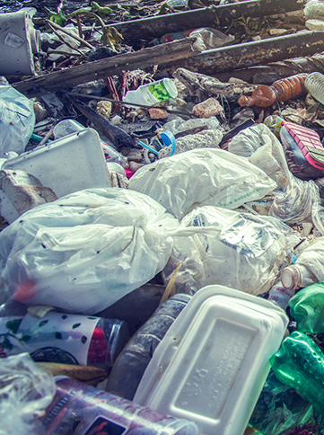
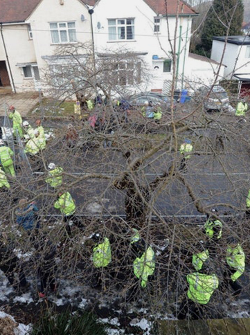
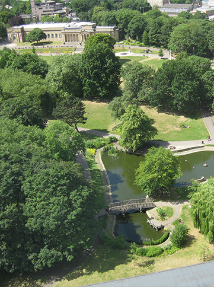
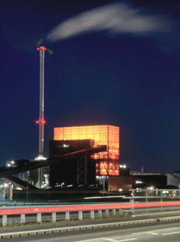
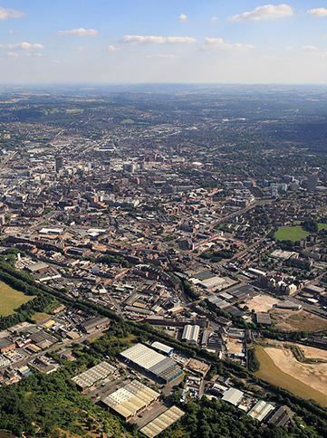

Sheffield has some of the worst air pollution in the country,
with 46 hours of “high” and “very high” levels recorded in 2018
- worse than anywhere else in the UK.

Sheffield produced 200,000 tonnes of waste last year, with only
a third recycled or composted - way off the EU’s target of 65%.
Sheffielders also discarded 6900 tonnes on the street and in
roadside bins.

5500 of Sheffield’s street trees have been chopped down in the
last 5 years. Over the next 20 years 12,000 more will go.

Research has found that health is poorer where there is less
green space. Sheffield's green areas may not always be available
to support those who need it most.

Sheffield’s main energy source is biomass, which - although
renewable - emits carbon dioxide and other greenhouse gases like
fossil fuels, significantly contributing to Sheffield’s
emissions since 2014.

Sheffield’s overall carbon emissions have increased by 9% (2005
- 2016), compared to a 6% decrease in the rest of the UK.